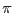

| Parameter | Mand | Type | Default | Constraints |
| imageset | yes | dataset | dummy_default | |
The input image dataset.
|
| outputstyle | no | type | cartesian | cartesian|polar |
This controls the style of the output. If outputstyle=`cartesian', the two output images store the x and y components of the gradient; if outputstyle=`polar', the two output images store the magnitude and azimuth of the gradient.
|
| xgradimageset | no | dataset | xgrad_image.ds | |
If outputstyle=`cartesian', this dataset is used to store the x component of the gradient.
|
| ygradimageset | no | dataset | ygrad_image.ds | |
If outputstyle=`cartesian', this dataset is used to store the y component of the gradient.
|
| gradsizeimageset | no | dataset | grad_size_image.ds | |
If outputstyle=`polar', this dataset is used to store the magnitude of the gradient.
|
| gradazimuthimageset | no | dataset | grad_azim_image.ds | |
If outputstyle=`polar', this dataset is used to store the azimuth (from 0 to ) of the gradient.
|
| Parameter | Mand | Type | Default | Constraints |